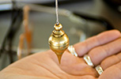

Péndulo

El arquitecto argentino Ricardo Fudric pone a disposición de todo aquel que desee experimentarlo, su método de rastreo mediante el uso del péndulo, que a él le ha resultado mucho muy eficaz por su rapidez, precisión y comodidad. Además ha desarrollado una serie de tablas que representan una valiosa herramienta ya que facilitan aún más el proceso de rastreo.A continuación presentamos las 6 tablas que Ricardo Fuduric gentimente ha puesto a disposición de los biomagnetistas:
Tabla R: Con esta se pregunta la(s) zona(s) del cuerpo que debe rastrearse.
Tabla 1: cabeza
Tabla 2: cuello y brazos
Tabla 3: torso
Tabla 4: espalda
Tabla 5: piernas y otros puntos.
Descargar las 6 tablas para uso del péndulo*
Una vez descargadas le aconsejamos imprimirlas para usarlas adecuadamente. El Arq. Fruduric usa un juego de tablas impresas para cada consultante.
Esperamos que este material le sea de utilidad.
* Para descargar las tablas del péndulo se requiere conexión a internet y sólo se puede efectuar una descarga por usuario. El sistema le pedirá su usuario y contraseña.